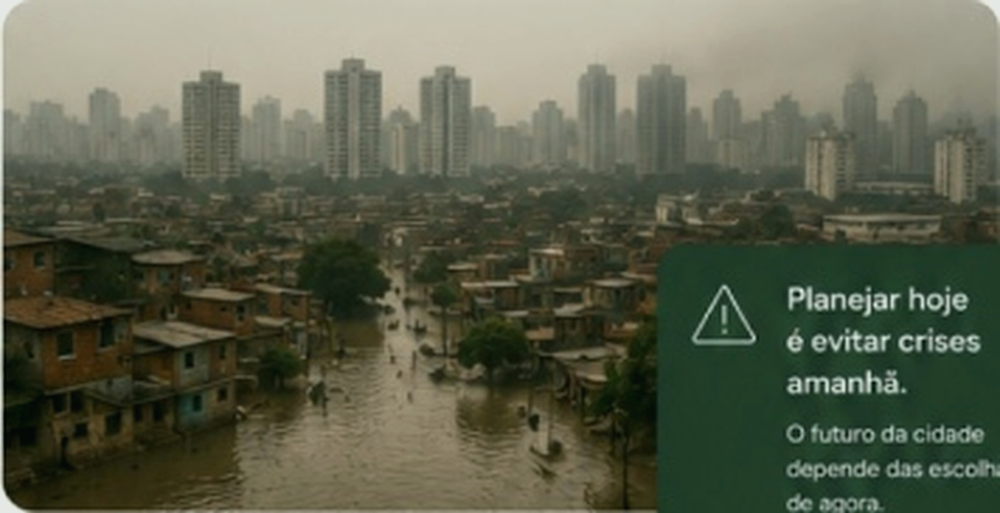

Participe
ParticipeCrescimento
acelerado
Cidades crescem mais rápido
que o planejamento urbano.
A urbanização molda nossas cidades, impacta o meio
ambiente e define a qualidade de vida das próximas
gerações.

Cidades crescem mais rápido
que o planejamento urbano.
O acesso à cidade ainda é
desigual e excludente.
Água, energia e solo são
cada vez mais limitados.
A natureza vem sendo
substituída pelo concreto.
A urbanização contribui
para o aquecimento global.
Enchentes, ilhas de calor, trânsito caótico, falta de
moradia digna e degradação ambiental são sinais de que
o modelo atual de urbanização não é sustentável.
Precisamos repensar como ocupamos o espaço urbano
para construir cidades mais justas, resilientes e
humanas.

O futuro da cidade
depende das escolhas
de agora.
Milhões de pessoas ainda
vivem sem acesso à moradia
digna e serviços básicos.
Transporte ineficiente
gera congestionamentos,
poluição e perda de tempo.
A falta de saneamento
afeta a saúde pública
e o meio ambiente.
Cidades mal planejadas
são mais vulneráveis a
eventos extremos.
Decisões sobre a cidade
precisam incluir quem
vive e usa os espaços.